Chapter 6 · Design problem
Design a Key-Value Store
How to grow a single in-memory hash table into a distributed, highly available store like Dynamo or Cassandra: the CAP trade-off, consistent hashing, quorums, vector clocks, gossip, hinted handoff, Merkle trees, and the write and read paths on each node.
TL;DR
- Goal:
put(key, value)andget(key)for small pairs (< 10 KB) at big-data scale, with high availability, automatic scaling, tunable consistency and low latency. - One server (an in-memory hash table) fills up fast, so the store must be distributed.
- CAP: network partitions are unavoidable, so choose CP (block writes, like a bank) or AP (keep serving, maybe stale). This design is AP with eventual consistency, like Dynamo and Cassandra.
- Partition with consistent hashing (virtual nodes). Replicate each key on the next N distinct servers clockwise, spread across data centers.
- Quorum: a write waits for W acks, a read for R replies. W + R > N ⇒ strong consistency (usually N = 3, W = R = 2).
- Vector clocks (
[server, counter]pairs) detect conflicting versions; the client reconciles them. - Failures: gossip detects them; sloppy quorum + hinted handoff ride out temporary ones; Merkle-tree anti-entropy repairs permanent ones; cross-data-center replication survives outages.
- Per node (Cassandra-style): write = commit log → memory cache → flush to SSTables. Read = memory cache → bloom filter → SSTables.

Interview answer skeleton
Requirements first, then CAP, then the components one by one. The summary table is your wrap-up.
- Clarify (≈5 min) Confirm the API (
put,get) and requirements: pairs < 10 KB, big data, high availability, high and automatic scalability, tunable consistency, low latency. Ask whether consistency or availability matters more. - High-level (≈10 min) A single in-memory hash table runs out of space. Distribute it, explain CAP, choose AP with eventual consistency, and draw the ring of identical nodes with a coordinator.
- Deep dive (≈20 min) Consistent hashing with virtual nodes; N replicas on distinct servers and data centers; quorum N/W/R; vector clocks; gossip; sloppy quorum + hinted handoff; Merkle trees; the write path and read path.
- Wrap up (≈5 min) Walk the goal → technique table: each requirement maps to one technique.
Understand the problem and design scope
A key-value store maps unique keys to opaque values through two calls. The hard part is the trade-offs the requirements force.
A key-value store (key-value database) is a non-relational database: each unique key is stored with a value, and the value is accessed through its key.
- Keys: plain text (
"last_logged_in_at") or hashed (253DDEC4). Short keys perform better. - Values: strings, lists, objects, etc. Dynamo, Memcached and Redis usually treat the value as an opaque object.
- Example data (Table 6-1):
145 → john,147 → bob,160 → Julia.
You are asked to support two operations:
put(key, value) // insert "value" associated with "key"
get(key) // get "value" associated with "key"There is no perfect design: each one balances read, write and memory usage, and consistency vs availability. This store should have:
- Small key-value pairs: less than 10 KB
- Ability to store big data
- High availability: responds quickly, even during failures
- High scalability: scales to support a large data set
- Automatic scaling: servers are added or removed automatically based on traffic
- Tunable consistency
- Low latency
Single-server key-value store
Easy to build as an in-memory hash table, but one machine runs out of room quickly.
Memory access is fast, but fitting everything in memory may be impossible. Two optimizations fit more data on one server:
- Data compression
- Keep only frequently used data in memory and the rest on disk
Even so, a single server reaches capacity very quickly. Big data needs a distributed key-value store.
Distributed key-value store: the CAP theorem
Once data lives on many nodes, network partitions will happen, and then you must choose consistency or availability.
A distributed key-value store, also called a distributed hash table, spreads key-value pairs across many servers. The CAP theorem says a distributed system can't provide more than two of these three at once:
| Property | Meaning |
|---|---|
| Consistency | All clients see the same data at the same time, no matter which node they connect to. |
| Availability | Any client that requests data gets a response, even if some nodes are down. |
| Partition tolerance | A partition is a communication break between two nodes. The system keeps operating despite network partitions. |
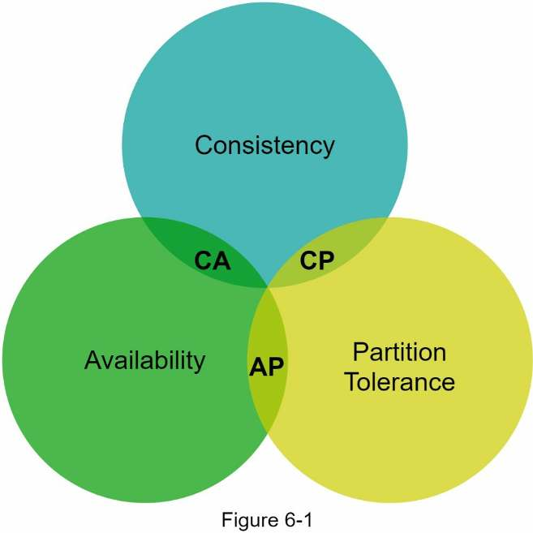
| Type | Keeps | Sacrifices | Exists in practice? |
|---|---|---|---|
| CP | Consistency + partition tolerance | Availability | ✓ |
| AP | Availability + partition tolerance | Consistency | ✓ |
| CA | Consistency + availability | Partition tolerance | ✗ Network failure is unavoidable, so a distributed system must tolerate partitions. |
Example: three replicas
Data is usually replicated several times. Take three replicas, n1, n2 and n3.
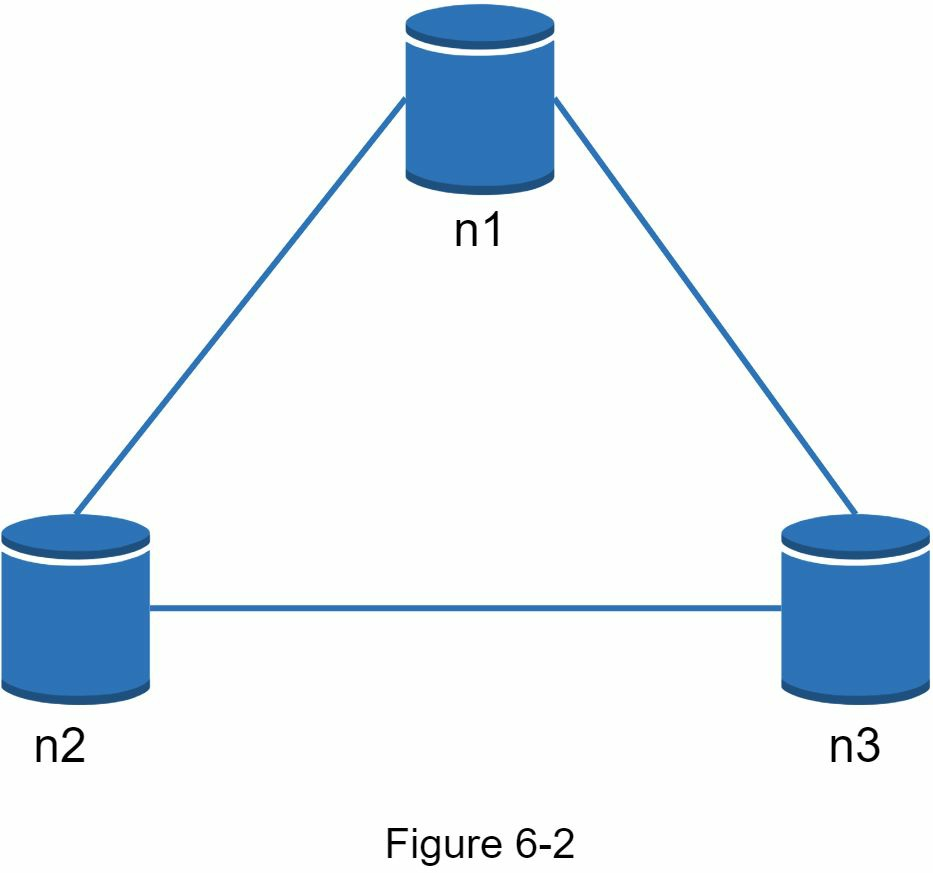
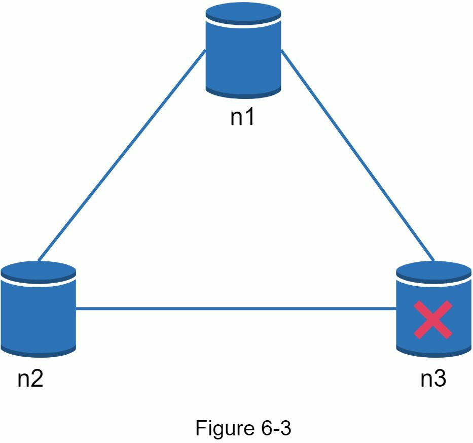
| Choice during the partition | What happens |
|---|---|
| CP (consistency over availability) | Block all writes to n1 and n2 so the three servers can't diverge. The system is unavailable. Banks work this way: the balance must be up to date, so they return an error until the inconsistency is resolved. |
| AP (availability over consistency) | Keep accepting reads, even if stale. n1 and n2 keep accepting writes, and n3 is synced when the partition heals. |
Data partition
Split the data across servers with consistent hashing, so it's spread evenly and little of it moves when servers change.
This and the components that follow are largely based on three popular systems: Dynamo, Cassandra and BigTable.
The full data set doesn't fit on one server, so split it into partitions. Two challenges: spread data across servers evenly, and minimize data movement when nodes are added or removed. Consistent hashing (Chapter 5) solves both:
- Place the servers on a hash ring. Figure 6-4 has eight: s0 … s7.
- Hash the key onto the same ring and store it on the first server clockwise. key0 goes to s1.
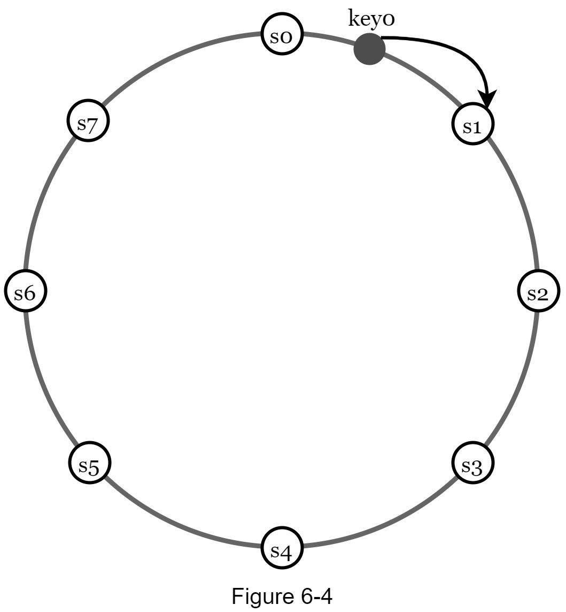
Advantages of consistent hashing here:
- Automatic scaling: servers can be added and removed automatically depending on load.
- Heterogeneity: the number of virtual nodes (ring positions) for a server is proportional to its capacity. Bigger servers get more virtual nodes.
Data replication
Copy each key to the first N distinct servers clockwise from it, ideally in different data centers.
For high availability and reliability, data is replicated asynchronously over N servers (N is configurable): from the key's ring position, walk clockwise and take the first N servers.
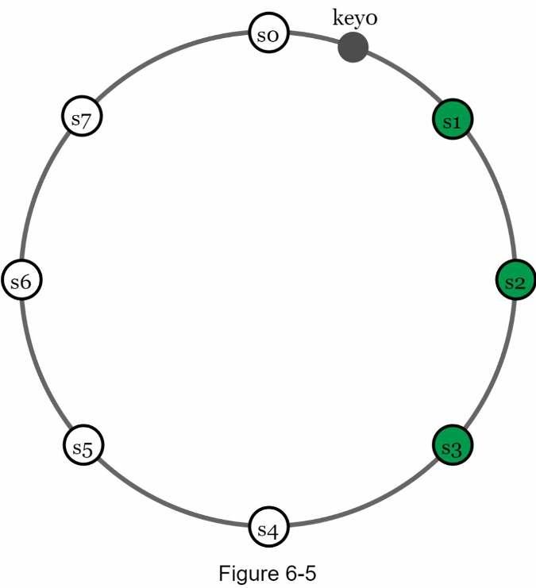
- Virtual node catch: the first N ring positions may belong to fewer than N physical servers. Count only unique servers during the walk.
- Correlated failures: nodes in one data center often fail together (power or network outages, natural disasters). Place replicas in distinct data centers linked by high-speed networks.
Consistency: quorum and consistency models
Replicas must be kept in sync. Quorum consensus lets you tune latency against consistency with three numbers: N, W and R.
| Symbol | Meaning |
|---|---|
| N | Number of replicas. |
| W | Write quorum: a write succeeds once W replicas acknowledge it. |
| R | Read quorum: a read succeeds once it has responses from at least R replicas. |
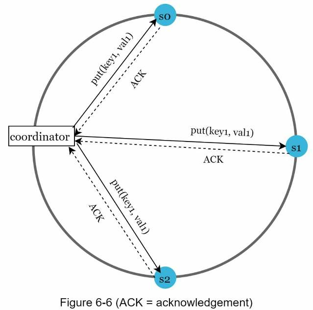
A coordinator is a node that acts as a proxy between the client and the replicas.
The trade-off is latency vs consistency. W = 1 or R = 1 returns quickly: the coordinator waits for any one replica. W or R > 1 is more consistent but slower, because the coordinator must wait for the slowest replica.
| Configuration | Result |
|---|---|
| R = 1, W = N | Optimized for fast reads |
| W = 1, R = N | Optimized for fast writes |
| W + R > N | Strong consistency guaranteed (usually N = 3, W = R = 2) |
| W + R ≤ N | Strong consistency not guaranteed |
Set N, W and R. The boxes show the worst case: the write is acknowledged by the first W replicas, and the read hears from the last R. Green boxes are in both sets.
Consistency models
A consistency model defines the degree of data consistency, on a wide spectrum:
| Model | Guarantee |
|---|---|
| Strong | Every read returns the most recent write. A client never sees out-of-date data. |
| Weak | Later reads may not see the most recent value. |
| Eventual | A form of weak consistency: given enough time, all updates propagate and all replicas agree. |
Strong consistency usually means a replica refuses new reads/writes until every replica agrees on the current write. That can block operations, which is bad for high availability.
This design uses eventual consistency, like Dynamo and Cassandra. Concurrent writes can then let inconsistent values into the system, and the client must read and reconcile them, using versioning.
Inconsistency resolution: versioning and vector clocks
Versioning treats every modification as a new immutable version. A vector clock on each version tells "newer" from "conflicting".
Replication gives high availability but causes inconsistencies among replicas.
How a conflict happens
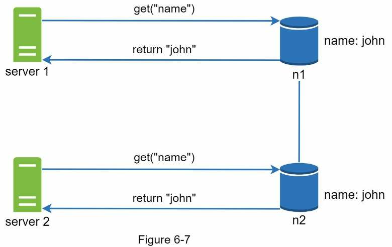
john.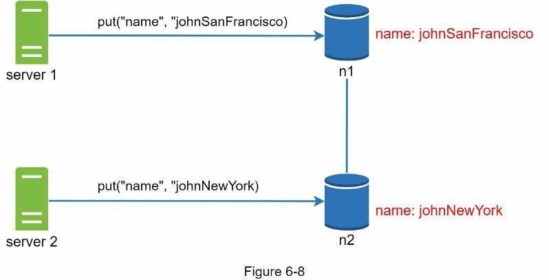
The original value can be ignored, since both changes were based on it. But nothing says whether v1 (johnSanFrancisco) or v2 (johnNewYork) should win. You need a versioning system that can detect and reconcile conflicts.
Vector clocks
A vector clock is a set of [server, version] pairs attached to a data item. It shows whether one version precedes, succeeds, or conflicts with another. Notation: D([S1, v1], …, [Sn, vn]), where Si is a server and vi its version counter. When D is written to server Si:
- If
[Si, vi]exists, increment vi. - Otherwise, create a new entry
[Si, 1].
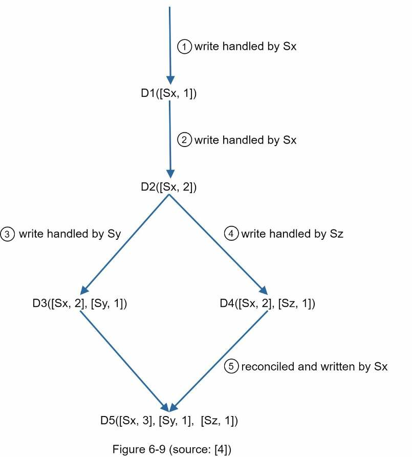
- A client writes D1, handled by Sx →
D1([Sx, 1]). - A client reads D1, updates it to D2, writes it back via Sx →
D2([Sx, 2]). D2 descends from D1, so it overwrites D1. - A client reads D2, updates it to D3, written via Sy →
D3([Sx, 2], [Sy, 1]). - Another client also reads D2, updates it to D4, written via Sz →
D4([Sx, 2], [Sz, 1]). - A client reads D3 and D4 and finds a conflict: D2 was modified by both Sy and Sz. The client resolves it and writes the result via Sx →
D5([Sx, 3], [Sy, 1], [Sz, 1]).
Ancestor or conflict?
| Relation | Rule | Example |
|---|---|---|
| X is an ancestor of Y (no conflict) | Every counter in Y is ≥ the matching counter in X | D([s0, 1], [s1, 1]) is an ancestor of D([s0, 1], [s1, 2]) |
| X and Y are siblings (conflict) | Some counter in Y is less than X's, and some counter in X is less than Y's | D([s0, 1], [s1, 2]) vs D([s0, 2], [s1, 1]) |
Downsides
- Client complexity: the client must implement conflict-resolution logic.
- Clocks grow: the
[server: version]pairs can grow rapidly. Fix: cap the length and drop the oldest pairs. Reconciliation can then be inefficient, because descendant relationships can't be determined accurately. Per the Dynamo paper, Amazon hasn't hit this in production, so it's probably acceptable for most companies.
Handling failures
At scale, failures are common. Detect them with gossip, then pick the fix by failure type: temporary, permanent, or a whole data center.
Failure detection: gossip protocol
Don't mark a server down just because one other server says so. Usually you need at least two independent sources of information.
All-to-all multicasting (every server pings every other) is straightforward but inefficient with many servers: n servers send n(n − 1) messages per round.
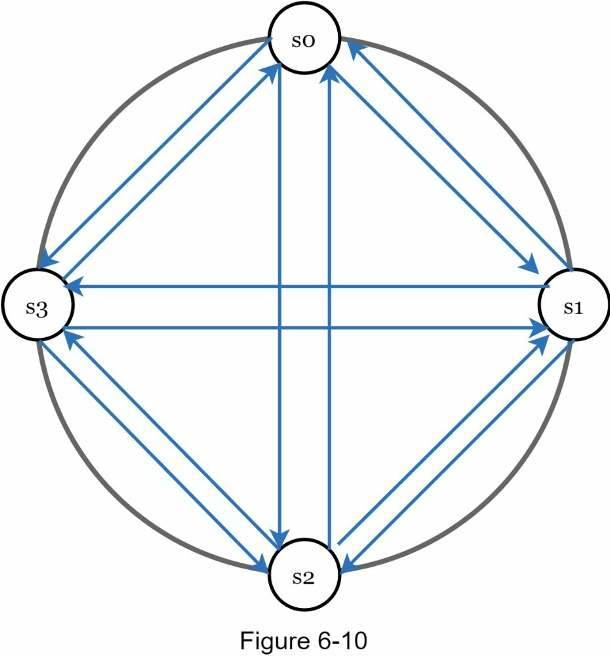
Better: a decentralized method such as the gossip protocol.
- Each node keeps a membership list: member IDs and heartbeat counters.
- Each node periodically increments its own heartbeat counter.
- Each node periodically sends heartbeats to a set of random nodes, which pass them on to another set.
- Receiving nodes update their membership list to the latest info.
- If a member's heartbeat hasn't increased for more than a predefined period, it is considered offline.
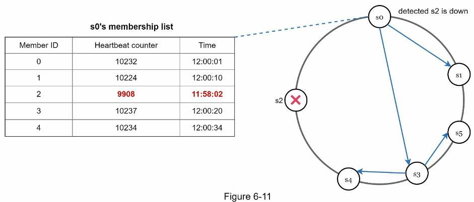
s0 notices that s2 (member ID 2) hasn't increased its heartbeat for a long time, so it sends heartbeats that include s2's info to random nodes. Once other nodes confirm it, s2 is marked down and the news spreads to every node.
Temporary failures: sloppy quorum and hinted handoff
With a strict quorum, reads and writes could be blocked while replicas are down. Instead:
- Sloppy quorum: don't enforce the quorum requirement. Use the first W healthy servers for writes and the first R healthy servers for reads on the ring, ignoring offline ones.
- Hinted handoff: while a server is unavailable (network or server failure), another server handles its requests. When it comes back, the changes are pushed back to it to restore consistency.
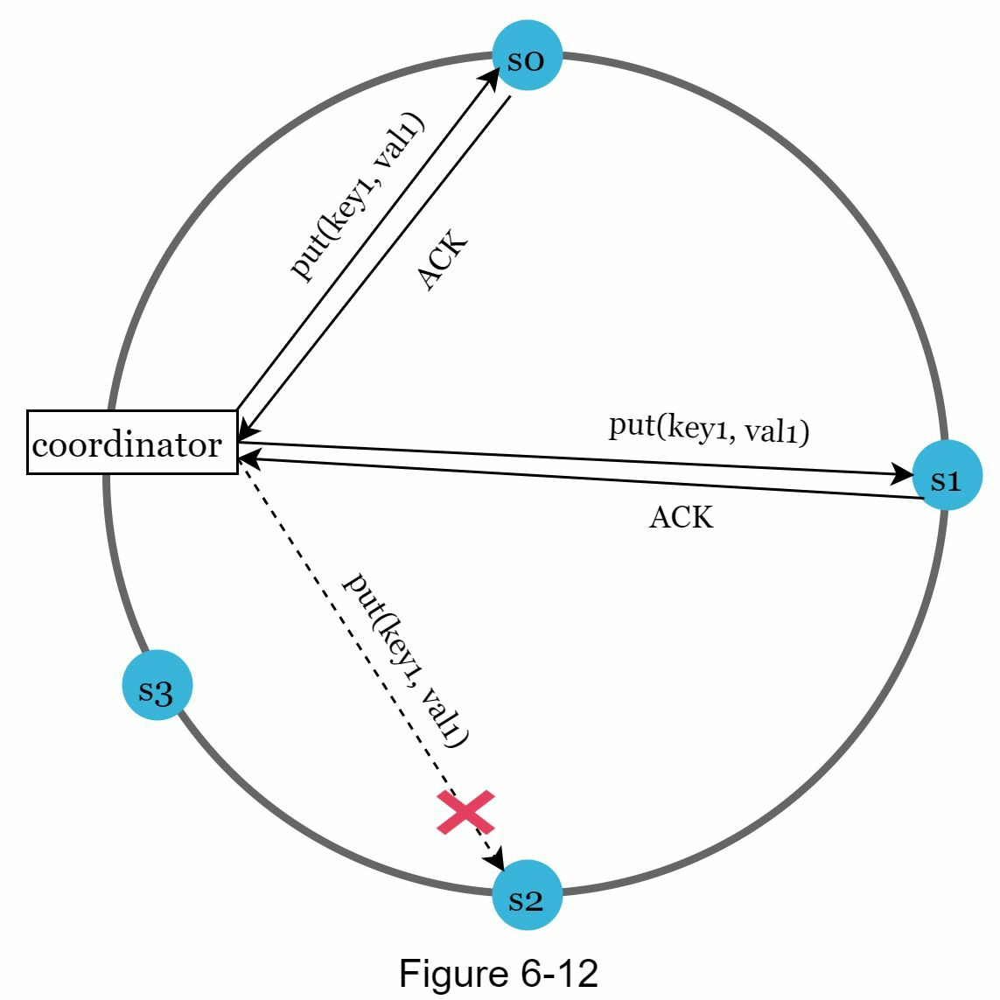
Permanent failures: anti-entropy with Merkle trees
If a replica is permanently unavailable, run an anti-entropy protocol: compare each piece of data on the replicas and update each to the newest version. A Merkle tree detects the inconsistencies and minimizes the data transferred.
A Merkle (hash) tree labels every non-leaf node with the hash of its children's labels (or values, for leaves). It allows efficient and secure verification of the contents of large data structures.
Building one (key space 1–12; red = inconsistent)
- Divide the key space into buckets (4 here). A bucket is the root-level node, which keeps the tree's depth limited.
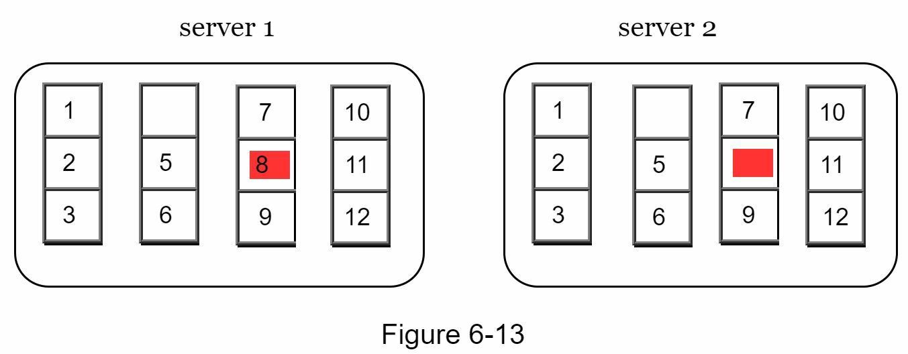
Figure 6-13 · Key 8 is on server 1 but missing on server 2. - Hash each key in a bucket using a uniform hashing method.
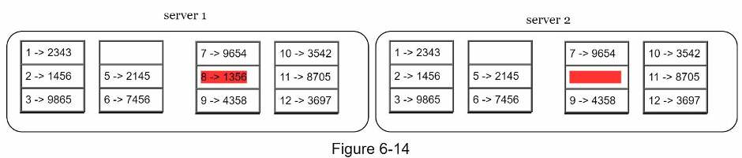
Figure 6-14 · 8 → 1356exists on server 1 only. - Create one hash node per bucket.
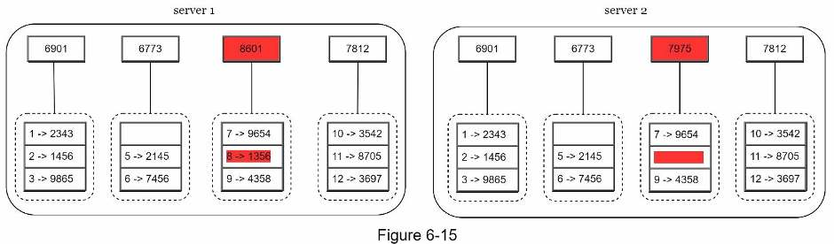
Figure 6-15 · Only the third bucket hash differs: 8601 vs 7975. - Build the tree upwards to the root by hashing children.
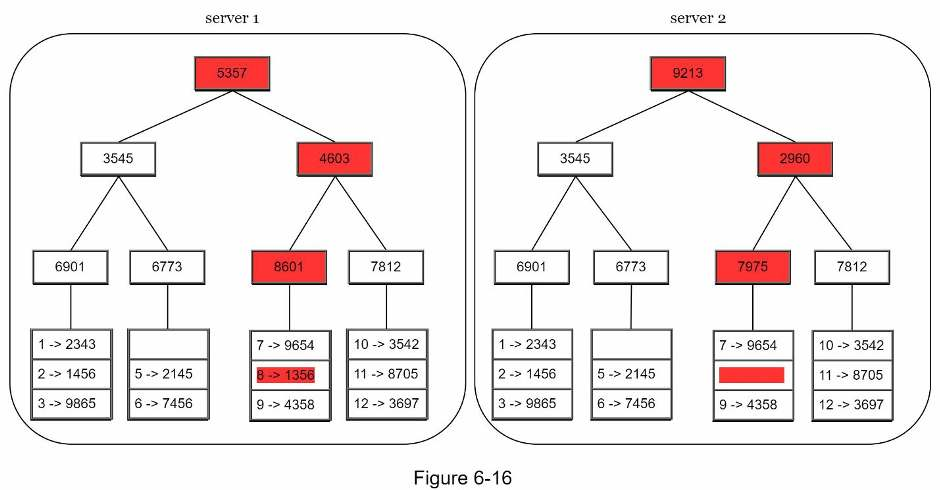
Figure 6-16 · The roots differ; follow the red path down to the bad bucket.
Comparing two trees
Compare the root hashes. If they match, both servers have the same data. If not, compare the left child hashes, then the right, descending to find the buckets that are out of sync. Synchronize only those buckets:
| Node | Server 1 | Server 2 | Action |
|---|---|---|---|
| Root | 5357 | 9213 | ✗ Descend |
| Left child (keys 1–6) | 3545 | 3545 | ✓ Skip |
| Right child (keys 7–12) | 4603 | 2960 | ✗ Descend |
| Bucket 3 (keys 7–9) | 8601 | 7975 | ✗ Sync this bucket |
| Bucket 4 (keys 10–12) | 7812 | 7812 | ✓ Skip |
Data synchronized is proportional to the differences between replicas, not the amount of data they hold. Real buckets are big:
Data center outage
A whole data center can go down (power outage, network outage, natural disaster, etc.). Replicate data across multiple data centers, so users can still reach the data through the others when one is completely offline.
System architecture diagram
A decentralized ring of identical nodes. Any node can coordinate a request, so there is no single point of failure.
- Clients use two simple APIs:
get(key)andput(key, value). - A coordinator node acts as a proxy between the client and the store.
- Nodes sit on a ring using consistent hashing.
- Completely decentralized, so adding and moving nodes can be automatic.
- Data is replicated at multiple nodes.
- No single point of failure: every node has the same responsibilities.
So each node performs many tasks (Figure 6-18):
Write path
A write is logged, buffered in memory, then flushed to sorted files on disk. Both paths are based mainly on Cassandra's architecture.
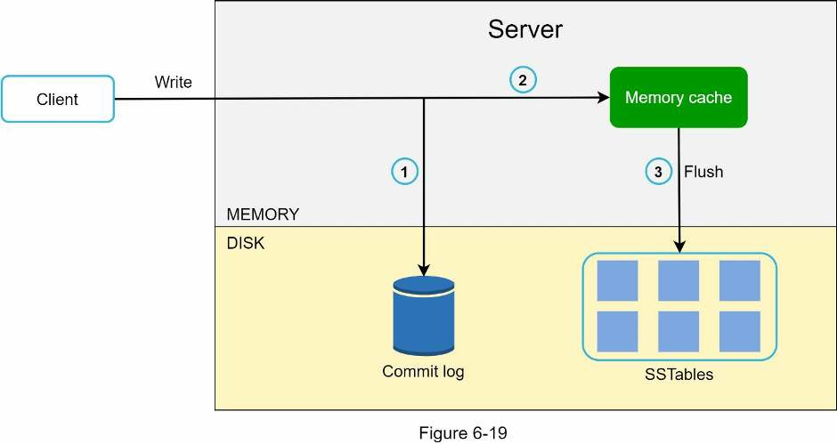
- The write request is persisted to a commit log file.
- The data is saved in the memory cache.
- When the memory cache is full or reaches a predefined threshold, the data is flushed to an SSTable on disk. An SSTable (sorted-string table) is a sorted list of
<key, value>pairs.
Read path
Check memory first. On a miss, a bloom filter tells you which SSTables might hold the key.
The node first checks the memory cache. If the data is there, it goes straight back to the client.
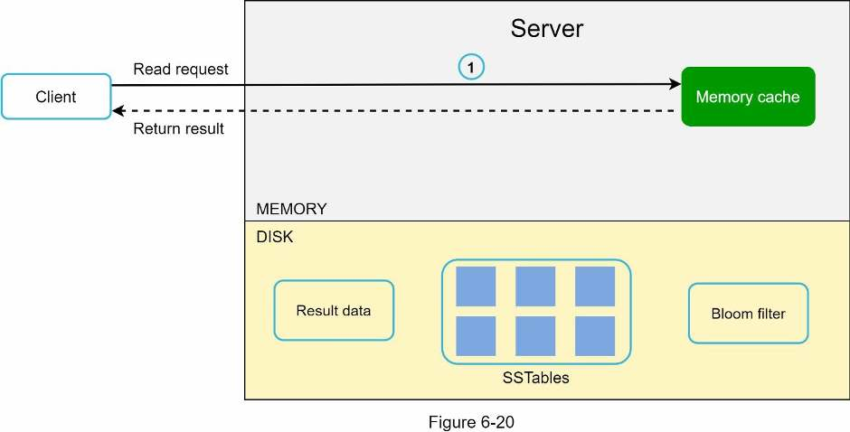
Otherwise the data comes from disk, and you need an efficient way to find which SSTable holds the key. A bloom filter is commonly used.
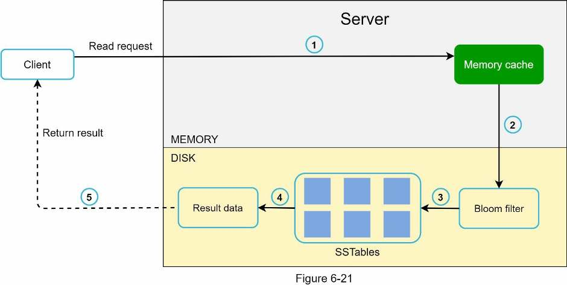
- Check whether the data is in memory. If not, go to step 2.
- Check the bloom filter.
- The bloom filter works out which SSTables might contain the key.
- The SSTables return the result of the data set.
- The result is returned to the client.
Summary: goal → technique
Every requirement maps to one technique. Walk this table to wrap up.
| Goal / problem | Technique |
|---|---|
| Ability to store big data | Use consistent hashing to spread the load across servers |
| High availability reads | Data replication; multi-data center setup |
| Highly available writes | Versioning and conflict resolution with vector clocks |
| Dataset partition | Consistent hashing |
| Incremental scalability | Consistent hashing |
| Heterogeneity | Consistent hashing (virtual nodes) |
| Tunable consistency | Quorum consensus |
| Handling temporary failures | Sloppy quorum and hinted handoff |
| Handling permanent failures | Merkle tree |
| Handling data center outage | Cross-data center replication |
Self-test
What are the seven requirements for this key-value store?
Pairs smaller than 10 KB, ability to store big data, high availability, high scalability, automatic scaling, tunable consistency, and low latency.
Define consistency, availability and partition tolerance. Why can't a CA system exist in practice?
C: all clients see the same data at the same time. A: every request gets a response even if some nodes are down. P: the system keeps working despite communication breaks between nodes. Network failure is unavoidable, so a distributed system must tolerate partitions, which rules out CA.
Three replicas; n3 is cut off from n1 and n2. What does a CP system do, and what does an AP system do?
CP: blocks writes to n1 and n2 so nothing diverges, making the system unavailable (a bank returns an error). AP: keeps accepting reads (possibly stale) and writes on n1 and n2, then syncs n3 when the partition heals.
Which technique partitions the data, and what two advantages does it bring here?
Consistent hashing: it spreads keys evenly and minimizes movement when nodes change. It enables automatic scaling and heterogeneity (virtual nodes proportional to server capacity).
How are a key's N replicas chosen, and what two refinements improve reliability?
Walk clockwise from the key's ring position and take the first N servers. Count only unique physical servers (virtual nodes can repeat a server), and place replicas in distinct data centers, since nodes in one data center often fail together.
With N = 3, what does W = 1 actually mean?
The data is still sent to all three replicas. The coordinator just considers the write successful after the first acknowledgment, without waiting for the other two.
When is strong consistency guaranteed? Give the fast-read and fast-write configurations.
When W + R > N, because read and write quorums must overlap in at least one node holding the latest data (typically N = 3, W = R = 2). Fast reads: R = 1, W = N. Fast writes: W = 1, R = N. W + R ≤ N gives no guarantee.
Strong vs weak vs eventual consistency: which does this design choose, and why?
Strong: reads always see the latest write. Weak: reads may miss it. Eventual: replicas converge given enough time. The design uses eventual consistency (like Dynamo and Cassandra), because strong consistency blocks operations until all replicas agree, which hurts availability.
In the vector clock example, why is D5 ([Sx, 3], [Sy, 1], [Sz, 1])?
D3 ([Sx, 2], [Sy, 1]) and D4 ([Sx, 2], [Sz, 1]) conflict. A client reconciles them, and Sx handles the write, so Sx's counter goes from 2 to 3 while Sy and Sz carry over.
How do you tell from two vector clocks whether they conflict?
X is an ancestor of Y if every counter in Y is ≥ X's. They conflict (siblings) if each has some counter smaller than the other's, e.g. ([s0, 1], [s1, 2]) vs ([s0, 2], [s1, 1]).
What are the two downsides of vector clocks, and how is clock growth handled?
Clients must implement conflict resolution, and the pairs can grow fast. Cap the length and drop the oldest pairs. This can make reconciliation inaccurate, but Amazon hasn't seen the problem in production.
Why gossip instead of all-to-all multicast, and how does gossip mark a node down?
All-to-all is inefficient with many servers. With gossip, each node keeps a membership list of heartbeat counters, increments its own, and sends heartbeats to random nodes. If a member's counter doesn't increase for a set period, it is considered offline, and it's marked down once other nodes confirm.
What are sloppy quorum and hinted handoff?
Sloppy quorum: use the first W (or R) healthy servers on the ring and ignore offline ones. Hinted handoff: a stand-in server (s3 for a down s2) handles requests temporarily and pushes the data back when the failed server recovers.
How do Merkle trees repair permanent failures efficiently?
Hash keys, then buckets, then up to a root. Compare roots and descend only into subtrees whose hashes differ, then sync just those buckets. Transfer is proportional to the differences, not the data size (e.g. 1 million buckets for 1 billion keys = 1,000 keys per bucket).
Describe the write path and the read path on a node.
Write: append to the commit log, save in the memory cache, flush to an SSTable when the cache hits its threshold. Read: check the memory cache; on a miss, use the bloom filter to find which SSTables might hold the key, read them, return the result.
Terms to know
- CAP theorem
- A distributed system can provide at most two of consistency, availability and partition tolerance at the same time.
- Virtual node
- One of several ring positions owned by a physical server. More virtual nodes means more data for that server.
- Quorum (N, W, R)
- N replicas; a write needs W acknowledgments and a read needs R responses.
- Coordinator
- The node that proxies a client request to the key's replicas.
- Eventual consistency
- Weak consistency where all replicas converge once updates have propagated.
- Vector clock
- A list of
[server, version]pairs on a data item, used to detect ancestor vs conflicting versions. - Gossip protocol
- Decentralized failure detection: nodes spread heartbeat counters to random peers.
- Sloppy quorum
- Use the first W/R healthy servers on the ring instead of the fixed replicas.
- Hinted handoff
- A stand-in server holds a down server's writes and hands them back when it recovers.
- Merkle tree
- A tree of hashes. Anti-entropy compares trees to find and sync only the buckets that differ.
- SSTable
- Sorted-string table: an on-disk, sorted list of key-value pairs.
- Bloom filter
- A compact structure used on reads to find which SSTables might contain a key.